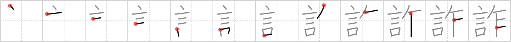

詐
← →
lie

Reading:
On-Yomi: サ — Kun-Yomi: いつわ.る
Heisig story:
The lie in this character refers to falsehoods and fibs. Its elements: words . . . saw.
Koohii stories:
1) [wrightak] 6-6-2006(518): Pinnochio gets frustrated that every time he utters a word of a lie, his nose grows and he has to get the saw out again.
2) [jameserb] 23-4-2008(44): Her lies are words that cut not like a knife, no not cleanly, but savagely like a saw.
3) [Piitaa] 3-7-2006(23): Hint: I think of lies as serrated words for some reason.
4) [herman] 24-11-2008(12): This really has the connotation of fraud rather than lie but the Pinnochio story works too well.
5) [nicjsb] 3-10-2008(8): His words were false; I saw right through his lie.